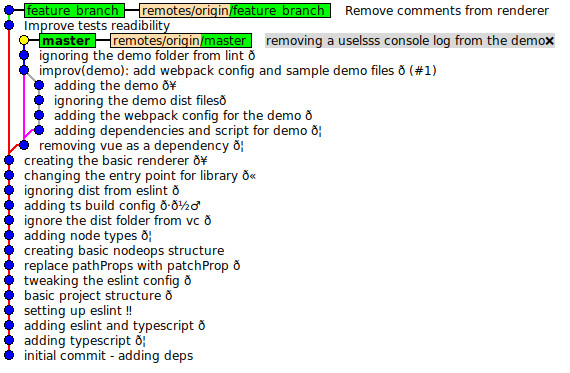
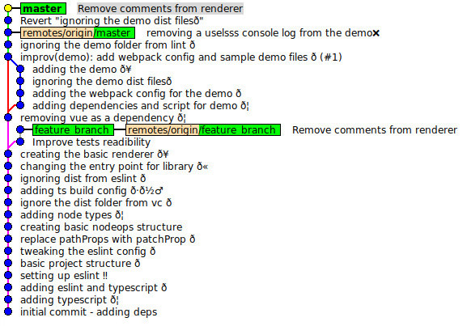

mkdir -p ~/Desktop/cwiczenia
cd ~/Desktop/cwiczenia
git clone https://github.com/git-warsztaty/reference-commit
cd reference-commit
git checkout feature_branch
git checkout master
gitk --all
W Gitk (z flagą --all) sytuacja na start powinna wyglądać jak na screenshocie:

Pracujemy na branchu master i orientujemy się, że w zmergowanym przez nas wcześniej branchu
znajduje się niechciany przez nas commit ignoring the demo dist files, a oprócz tego potrzebujemy commita
Remove comments from renderer z brancha feature_branch, ale nie chcemy dołączać całego brancha - chcemy
tylko ten jeden commit.
Za pomocą git revert COMMIT_ID wycofaj commit ignoring the demo dist files,
a następnie za pomocą git cherry-pick COMMIT_ID przenieś na mastera
commit Remove comments from renderer z brancha feature_branch, w ogóle nie podając ID commitów.
W Gitk (z flagą --all) sytuacja po zakończeniu pracy powinna wyglądać jak na screenshocie:

git revert HEAD~2^2~
git cherry-pick feature_branch
gitk --all